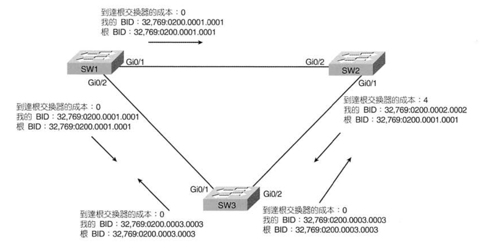

- 首頁
- 大一
- 大二
- 大三
- 大四
- 網路相關
- LAN Design
- Layer 2
- Layer 3
STP (Spanning Tree Protocol)
啟用 STP 後，Switch 會將自己的一些 port 封鎖起來，使得任何一對 LAN 區段間只存在一條 active 的路徑，不必擔心 loop 造成的問題。
不使用STP會造成的問題
| 問題 | 說明 |
|---|---|
| 廣播風暴 | 訊框在相同的鏈路上重複傳送，消耗頻寬 |
| MAC Table 不穩定 | 不正確的資訊導致 Switch 不斷更新 MAC Table，使得訊框形成迴圈，並導致訊框送錯位置 |
| 傳送多個重複的訊框 | 同一個訊框的副本產生迴圈，令目的地主機混淆 |
廣播風暴
Bob 傳送了一個廣播訊框，SW3 > SW2 > SW1 > SW3
MAC表不穩定
假設 SW3 一開始的 MAC Table 紀錄了這條資訊：
0200.3333.3333 Fa0/13 VLAN1
當 SW1 再轉送到 SW3 時，因為來源 MAC Address 為 0200.3333.3333，於是 MAC Table 就更新成：
0200.3333.3333 Gi0/2 VLAN1
錯誤的資訊會導致訊框永遠到不到 Bob 的位置
傳送多個重複的訊框
假設沒有一台 Switch 認得 Larry 的 MAC Address，這時 Bob 傳送了一個訊框給 Larry：
- SW3 不認識 Larry 的 MAC Address
- 傳送副本給 SW1, SW2（泛洪）
- SW1, SW2 同樣不認識 Larry，做泛洪
- Larry 收到了多個訊框的副本，有可能導致應用程式錯誤
擴展樹通訊協定(IEEE 802.1d)
IEEE 802.1d 為第一個公開的 STP 標準。
用途
STP 藉由把每一個橋接/交換埠變成 轉送狀態(forwarding state) 或 封鎖狀態(blocking state) 來防止迴圈。
一些名詞
| 名詞 | 說明 |
|---|---|
| Root Switch | BID 最小的設備 |
| Root Port | 從這個 Port 出去會走向 Root Switch，並且是所需成本最小的 Port |
| Designated Switch | 有 Designated Port 的 Switch |
| Designated Port | 其他設備進入這個 Port 後將有一條 Cost 最小的路徑 |
Switch ID, Hello BPDU
每台 Switch 的橋接器ID(Bridge ID, BID) 是獨一無二的 8 位元組數值，包含 2 位元組的優先權欄及 6 位元組的系統ID(MAC Address)
STP 定義的訊息稱為橋接協定資料單元(Bridge protocol data unit, BPDU)，是橋接器或Switch互相交換訊息用的。一般最常見的訊息稱為 Hello BPDU，其中包含：
| 欄位 | 說明 |
|---|---|
| Root 的 BID | 傳送 Hello 的 Switch 所相信的 Root 的 BID |
| 傳送端的 BID | 傳送 Hello 的 Switch 自己的 BID |
| 到 Root Switch 的成本 | 自己到 Root Switch 間的 STP 成本 |
| Root Switch 上的計時器值 | 包含 Hello計時器、MaxAge計時器、轉送延遲計時器 |
擴展樹演算法
- 選舉 Root Switch
- Non-root Switch 選出 Root Port
- 選出 Designated Port
| Port 特徵 | STP 狀態 | 說明 |
|---|---|---|
| Root Switch 的所有 Port | 轉送 | Root Switch 上的所有 Port 都為 DP |
| 每個 Non-root Switch 的 RP | 轉送 | Non-root Switch 到達 Root Switch 成本最小的 Port |
| 每個網段下的 DP | 轉送 | 在網段中轉送成本最低的 Switch 即為這個網段的 Designated Switch |
| 其餘 Port | 封鎖 | 不會轉送任何訊框 |
1. 選舉 Root Switch
根據 BID 來選出：Root Switch 是一台 BID 數值最小的 Switch。
BID：優先權 + MAC Address，先比 Priority 再比 MAC Address
選舉過程一開始，所有的 Switch 都會發出 Hello BPDU 來聲稱自己是 Root Switch，如果 Switch 聽到有比自己更低的 BID 之 Hello (Superior Hello)，Switch 就會停止宣稱自己是 Root Switch，並開始轉送 Superior Hello。
SW2 收到 SW1 的 Hello，轉送它：

選舉結束後，只有 Root Switch 會繼續發送 Hello BPDU，其他 Switch 收到 Hello 後會更新傳送端的 BID 以及成本，並從其他介面傳送出去
2. 選出 Root Port
Root Port 是指到達 Root Switch 之成本最低的 Port。
計算成本的方式是把 STP成本(介面成本) 和 Hello裡所列的成本 相加在一起。
SW3 挑選 gi0/1 作為 RP、SW2 挑選 gi0/2 作為 RP：
3. 選出 Designated Port
Root Port 對面一定為 Designated Port，如果一條鏈路中沒有 Root Port (像是下圖中的 SW2 Gi0/1 及 SW3 Gi0/2)，則選擇到達 Root Switch 成本最低的 Port，若通告成本不分勝負，STP 會挑選 BID 較小的交換器。
SW2 及 SW3 到達 Root Switch 的成本分別為 4 與 5，因此 SW2 的 gi0/1 就是這個區段上的委任埠：
目前各 Port 的狀態：
| Port | 狀態 | 理由 |
|---|---|---|
| SW1, Gi0/1 | 轉送 | Root Switch |
| SW1, Gi0/2 | 轉送 | Root Switch |
| SW2, Gi0/1 | 轉送 | SW3 的 DP |
| SW2, Gi0/2 | 轉送 | RP |
| SW3, Gi0/1 | 轉送 | RP |
| SW3, Gi0/2 | 封鎖 | 非 RP、DP |
IEEE 規定的埠成本值
IEEE 沒有料到乙太網路會成長到 10Gbps，故重新修訂新的成本值
| 乙太網路速度 | 原始 | 修訂 |
|---|---|---|
| 10 Mbps | 100 | 100 |
| 100 Mbps | 10 | 19 |
| 1 Gbps | 1 | 4 |
| 10 Gbps | 1 | 2 |
STP 收斂時間
| 計時器 | 預設值 | 說明 |
|---|---|---|
| Hello | 2s | Root Switch 每次建立 Hello 的間隔 |
| MaxAge | 10*Hello | 每台 Switch 停止收到 Hello 後，等待多久才改變拓樸 |
| 轉送延遲 | 15s | 當介面從封鎖變成轉送時所需的時間 |
當 STP 收斂時，不能馬上從封鎖轉至轉送狀態，因為可能會造成短暫的LOOP，所以必須先經過兩個步驟：
- 聆聽：等待舊的 MAC Address Table 過期，避免 loop
- 學習：依然不轉送訊息，但開始學習新的 MAC Address
從封鎖到聆聽，聆聽到學習，學習到轉送，所經過的時間，稱作轉送延遲
STP收斂時間：MaxAge + 聆聽轉送延遲 + 學習轉送延遲：50s
維護及更新STP
- Root Switch 會建立成本為 0 的 BPDU，並從所有介面送出
- Non-Root Switch 在自己的 Root Port 收到 Hello 時，會把自己的 BID 列入 Hello 裡的 BID 欄位，並計算到達根交換器的成本。之後才將 Hello 從所有 Designated Port 轉送出去
- 持續進行1, 2，直到發生改變為止
若交換器沒有在 MaxAge 的設定時間內收到 Hello BPDU，交換器就會採取變更 STP 拓樸來做出反應
SW1, SW3 間的連線斷了，SW3 在自己的 gi0/1 無法收到 Hello，於是 SW3 會對 STP 的拓樸做出反應：
IEEE 802.1d STP 狀態統整
下表整理出擴展樹的各種介面狀態：
| 狀態 | 轉送訊框 | 是否學習MAC | 過度還是穩定 |
|---|---|---|---|
| 封鎖 | 否 | 否 | 穩定 |
| 聆聽 | 否 | 否 | 過度 |
| 學習 | 否 | 是 | 過度 |
| 轉送 | 是 | 是 | 穩定 |
| 停用 | 否 | 否 | 穩定 |
STP 選用功能
EtherChannel
減少 STP 收斂時間最理想的方式就是避開收斂。
在一對相同的交換器之間，EtherChannel 結合了多條平行且速度相同的鏈路組成一條邏輯的鏈路。若其中一條鏈路不通，在至少有一條鏈路是 up 的情況下，STP 不會進行收斂。
PortFast
- 允許該埠忽略聆聽及學習狀態，立即成為轉送狀態，並跳過有關STP的選舉。
- 確定這個埠沒有連接到其他橋接器、交換器上，才可啟用PortFast
- 適合用在終端使用者連接上
STP安全性
- 攻擊者可以將 STP priority 低的設備接到網路上，藉此拿到 LAN 裡的大量資料流
- BPDU Guard
- 把會收到 BPDU 的 port 停用
- 適用於 port 確定沒有存取其他 switch
- 經常與 portfast 合用，減少 portfast 的風險
- Root Guard
- 解決惡意 switch 成為 Root Switch
- 如果收到鄰居的 BID 更低時，在收到 Superior BPDU 的期間忽略他的 BPDU，並且關掉這個 port，直到 Superior BPDU 不再出現
高速擴展樹通訊協定(IEEE 802.1w)
用途：加快網路收斂的速度
RSTP 與 STP：
- 相同的方法 select root
- 相同的方法找 RP
- 相同的方法找 DP
- 一樣 port 狀態：轉送與丟棄(封鎖)
RSTP 縮短收斂的等待時間
- MaxAge = 3 * Hello 間隔時間
- 刪除聆聽及學習的轉送延遲時間
一些名詞
RSTP 連結型和邊緣型
RSTP 將實體連接類型描述成以下三種：
- 點對點連接型
- 共享式連接型
- 邊緣型
RSTP 將 Switch 之間的乙太網路稱為連結(link)，到終端使用者設備的乙太網路稱為邊緣(edge)
RSTP 只能為點對點連接型與邊緣型的連接減少收斂時間，無法改善共享式連結型的收斂速度。
RSTP 埠角色
| RSTP角色 | STP角色 | 定義 |
|---|---|---|
| 根埠 | 根埠 | 收到最佳 BPDU 的 Port |
| 委任埠 | 委任埠 | 在連接相同區段的所有 Port 中，「通告」最佳 BPDU 的 Port |
| 替代埠 | - | 收到次佳 BPDU 的 Port |
| 備用埠 | - | 在相同區段的非委任埠 |
| 停用 | - | 手動關閉的埠 |
除了 DP, RP 之外，添加了三種角色：
- 替代埠(alternate port)：Switch 目前 RP 的最佳替代角色。
- 備用埠(backup port)：同一台 Switch 中，兩條線路連到相同的區段(碰撞領域)，其中一個會是 DP ，其他的會是 BP
- 停用埠(disabled port)
RSTP 埠狀態
| 狀態 | STP狀態(802.1d) | RSTP狀態(802.1w) | 轉送訊框 |
|---|---|---|---|
| 啟用 | 封鎖 | 丟棄 | 否 |
| 啟用 | 聆聽 | 丟棄 | 否 |
| 啟用 | 學習 | 學習 | 否 |
| 啟用 | 轉送 | 轉送 | 是 |
| 停用 | 停用 | 丟棄 | 否 |
RSTP 擴展樹演算法
穩定狀態下：
- 每台 Switch 都會產生 Hello BPDU，不只是改變及轉送來自 Root Switch 的 Hello
- 在穩定狀態下，最後結果都一樣：Switch 會持續聆聽相同的 Hello，並保留 STP 拓樸
介面改變時：
- 邊緣型
- 像是 PortFast，立刻進入轉送狀態
- 共享式連結型
- 不重要
- 點對點連結型
- 減低 MaxAge 時間
- 移除不重要聆聽狀態
- 主動觀察
RSTP 範例
工程師為了網路備援，於是接上 SW1 與 SW4，此時會產生 RSTP 收斂：
- SW4 與 SW1 的 Port 會變成 RP
- SW4 暫時封鎖其他所有連結型的埠，防止迴圈
- 在新的 RP 上，使用RSTP的 提案(proposal) 與 協議(agreement) 訊息來和它的鄰居 SW1 進行協商
- 協商結果為立即進入轉送狀態
- SW4 和 SW3 重複 SW1 和 SW4 之前做過的相同程序
- SW4 會轉送新的 Root 的 BPDU 給 SW3
- SW3 目前聆聽兩種 BPDU
- 根據新的 BPDU 改變自己的 RP
- SW3 和 SW2 重複相同程序，完成收斂
STP 的設定
多重 STP 執行個體
Cisco 交換器預設使用 IEEE 802.1d 並搭配 Per-VLAN Spanning Tree Plus (PVST+)
- 為每個 VLAN 建立各種不同的 STP Instance
- 可以在不同 VLAN 下改變 STP 參數，做到 load balence 的效果
RPVST
- PVST 的 RSTP 版本
IEEE 後來制定了多重擴展樹(Multiple Spanning Tree)
- MIST 允許同時定義多個 RSTP Instance
- 每一個 VLAN 都和一個特定的 Instance 有關
影響 STP 拓樸的設定
- BID 會影響到 Root Switch 的選擇及 Non-Root Switch RP 的選擇
- 每個介面(per-VLAN)到達 Root Switch 的 STP 成本，會影響到每個網段上 DP 的選擇
優先權與系統ID延伸
Cisco 採用比 IEEE BID 更複雜的格式，將優先權分為兩個部分
為了替 per-VLAN STP 的 instance 建立 Switch 的 BID，Switch 必須使用 4096 倍數的基底優先權(base priority)
- 轉換為 2 進制時，後面 12 位元都為 0
- 之後會將優先權與VLAN ID相加，後12位元將填上VLAN ID
STP 故障排除
- 找到 Root Switch
- 找出每個 Switch 的 RP 及從 RP 到 Root Switch 的 cost
- 算出每條路徑的 cost
- 對每個區段找出 DP 以及該 DP 在此區段上通告的 cost
- 擁有到達 Root Switch 成本最小的 Port 即是該區段的DP
- 如果平手，則 BID 最低的交換器勝出